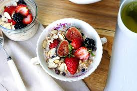

11.Birchermüesli
Birchermüesli is a cold oatmeal dish based on rolled oats and ingredients such as grains, nuts, seeds and fresh or dried fruits. Muesli was traditionally prepared with milk or cream, a squeeze of citrus juice, often with a sweetener such as honey, and soaked overnight.[3] Yoghurt or other milk products are now commonly added to packaged and homemade muesli recipes